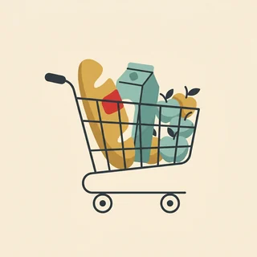
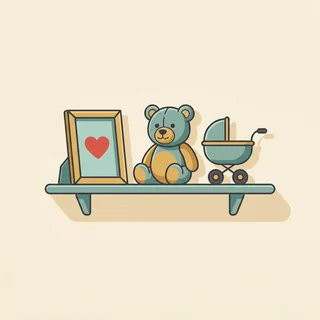
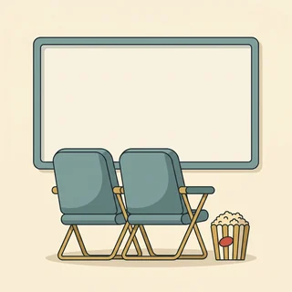
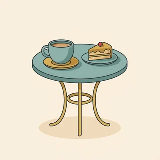

deutschoderwas · Sprechclub · Woche 7 · Strang C · Teil 2 · Mittwoch, 28. Oktober
Die Debatte: Sind Geschenke sinnvoll oder Verschwendung?
Am Montag ging es darum, wie man schenkt. Heute geht es um die unbequemere Frage davor: ob überhaupt. Jedes Jahr landen Millionen Geschenke ungeöffnet im Schrank, im Internet oder im Müll — und trotzdem käme kaum jemand auf die Idee, Weihnachten abzuschaffen. Zwischen dem, was ein Geschenk kostet, und dem, was es bedeutet, liegt der ganze Streit.
Dein Niveau
Gleiches Thema, andere Sätze. Wechsle jederzeit — probier ruhig beide Seiten aus.
Was passiert nach dem Auspacken?
Der Moment des Schenkens dauert zehn Sekunden. Danach steht das Geschenk irgendwo — im Regal, im Schrank, auf einem Verkaufsportal oder in der Tonne. Wer ehrlich rechnet, kommt bei sich selbst schnell auf mehrere Dinge, die er nie benutzt hat und trotzdem nicht wegwerfen kann. Genau da fängt die Debatte an.
Was war das letzte Geschenk, das du nie benutzt hast?
Wirfst du Geschenke weg, wenn du sie nicht brauchst?
Wie viele Geschenke bekommst du im Jahr ungefähr?
Warum fällt es so schwer, ein ungenutztes Geschenk wegzugeben?
Ist ein Geschenk, das im Schrank liegt, trotzdem etwas wert?
Wem zuliebe schenken wir eigentlich — dem anderen oder uns selbst?
🔑 Damit die Debatte trägt: Es geht heute nicht um Weihnachten oder Geburtstage abschaffen. Es geht um die Frage dahinter: Wofür ist ein Geschenk da? Wer das beantwortet, hat automatisch eine Position.
Der Preis und die Bedeutung
Ein Geschenk hat zwei Werte, und sie haben wenig miteinander zu tun. Der eine steht auf dem Etikett, der andere entsteht erst beim anderen. Deshalb kann etwas Teures völlig danebengehen und ein Zettel mit drei Sätzen jahrelang aufgehoben werden. Wer in dieser Debatte nur über Geld spricht, hat die Hälfte schon verloren.
Was war dein schönstes Geschenk — und was hat es gekostet?
Findest du Geld schenken praktisch oder lieblos?
Schenkst du lieber Dinge oder gemeinsame Zeit?
Kann ein teures Geschenk den anderen unter Druck setzen?
Ist Geld schenken ehrlicher als etwas zu kaufen, das niemand wollte?
Woran merkt man, dass sich jemand wirklich Gedanken gemacht hat?
💡 Zahlen für die Debatte: Umfragen in Deutschland kommen Jahr für Jahr auf ungefähr ein Viertel aller Weihnachtsgeschenke, die nicht gefallen — umgetauscht, weiterverschenkt oder verkauft. Nenn die Zahl ruhig, aber sag dazu, woher du sie hast. Genau das macht in einer Debatte den Unterschied.
Kurz zurück: Montag in zwei Minuten
Falls du Teil 1 verpasst hast — das hier reicht, um heute mitzudiskutieren.
das Geschenkder Wunschdie Einladungdie Freudeumtauschender Kassenbondie Rücksendungdie Reklamationdie Verschwendungzusammenlegen
Dativ vor Akkusativ
So ging die RegelZwei Nomen: erst die Person, dann die Sache. Ich schenke meiner Schwester ein Buch. Zwei Pronomen: umgekehrt. Ich schenke es ihr.
Bitten oder fordern
So ging der UnterschiedIm Laden bittest du: Wäre ein Umtausch möglich? Bei einem Mangel forderst du: Ich hätte gern Ersatz.
Was ist der Unterschied zwischen Umtausch und Widerruf?
Warum sagt man lieber etwas Kleines als eine Kleinigkeit ohne Wert?
Wie fragt man höflich nach einem Wunsch, ohne einfallslos zu wirken?
🔁 Zu zweit, dreißig Sekunden: Einer nennt ein Geschenk, das er einmal bekommen hat, der andere sagt in einem Satz, was daran gut war — mit Dativ und Akkusativ zusammen. Danach geht es los: Heute wird aus dem Schenken eine Streitfrage.
Zwölf Wörter für eine Streitfrage, die jeden betrifft
Sag jedes Wort laut — mit Artikel. Und häng gleich einen Satz an: Auf welcher Seite der Debatte steht dieses Wort?
wegwerfen
„Niemand wirft ein Geschenk weg — man stellt es in den Keller.“
💡 Trennbar: ich werfe es weg. Genau darum dreht sich die Debatte: Weggeworfen wird selten, aufgehoben dafür ewig. Dazu passen die Verschwendung von Montag und etwas verschwenden.

der Konsum
„Weihnachten ist für viele vor allem Konsum geworden.“
💡 Ein sachliches Wort, kein Schimpfwort — bis man Konsumzwang daraus macht. Merk dir auch konsumieren und den Gegensatz der Verzicht.
der Überfluss
„Wir schenken im Überfluss und wissen nicht mehr, wohin damit.“
💡 Das Wort der Gegenseite zur Armut. Im Überfluss leben ist die feste Wendung. Und pass auf den Unterschied auf: überflüssig heißt unnötig, nicht reichlich.

die Erinnerung
„Von diesem Tag ist mir vor allem eine Erinnerung geblieben.“
💡 Das stärkste Argument der Gegenseite: Erinnerungen kann man nicht umtauschen. Dazu gehört sich an etwas erinnern — immer mit an und Akkusativ.

das Erlebnis
„Wir schenken uns nur noch Erlebnisse — ein Konzert, ein Wochenende.“
💡 Das Wort für den beliebtesten Kompromiss der Debatte. Etwas erleben ist das Verb dazu. Und ein feiner Unterschied: Ein Erlebnis hat man, eine Erfahrung macht man.
die Absprache
„Wir haben die Absprache, dass wir uns nichts mehr schenken.“
💡 Das praktischste Wort des Abends: etwas absprechen. In vielen Familien löst genau eine Absprache das ganze Problem — und niemand traut sich, sie vorzuschlagen.
die Wunschliste
„Bei uns schreibt jeder eine Wunschliste, dann geht nichts daneben.“
💡 Für die einen die Rettung, für die anderen das Ende der Überraschung. Genau deshalb taucht das Wort heute auf beiden Seiten auf. Verwandt: sich etwas wünschen — reflexiv, mit Dativ.
der Wert
„Der Wert eines Geschenks steht selten auf dem Etikett.“
💡 Das Wort hat zwei Bedeutungen, und genau davon lebt diese Debatte. Nützlich: Wert legen auf (+ Akkusativ) und das Adjektiv wertvoll.
die Meinung
„Meiner Meinung nach ist Geld das ehrlichste Geschenk.“
💡 Zwei feste Wendungen für heute: meiner Meinung nach (ohne ist dahinter!) und der Meinung sein, dass …. Beides klingt sofort erwachsener als ich denke.
der Zweifel
„Ich habe Zweifel, ob teure Geschenke wirklich glücklich machen.“
💡 Ein Wort, das in Debatten stark wirkt: Wer Zweifel zugibt, wirkt sicher, nicht schwach. Dazu an etwas zweifeln und die Wendung ohne Zweifel.

einladen
„Statt etwas zu kaufen, lade ich sie lieber zum Essen ein.“
💡 Trennbar: ich lade dich ein. Und Vorsicht mit der Bedeutung — einladen heißt hier bezahlen. Wer nur mitkommen soll, wird gefragt, nicht eingeladen.
das Angebot
„Im Angebot kaufen wir Dinge, die wir sonst nie kaufen würden.“
💡 Achtung, zwei Bedeutungen: das Angebot im Laden (der Preis) und ein Angebot machen (der Vorschlag). Für heute wichtig: im Angebot sein und reduziert.
💡 Spiel „Zwei Seiten, ein Wort“: Zieht ein Wort. Der erste baut damit ein Argument für Geschenke, der zweite mit demselben Wort eines dagegen. Wer es nicht schafft, zieht ein neues Wort — und merkt schnell: Fast jedes Wort funktioniert auf beiden Seiten.
Zahl, Gefühl oder Erfahrung?
Wer über Geschenke streitet, streitet selten über Fakten. Die drei Sorten unten wirken völlig unterschiedlich — und wer erkennt, welche Sorte gerade kommt, weiß auch, womit er antworten kann.
📊
die Zahl
etwas, das man nachprüfen kann
Rund ein Viertel aller Weihnachtsgeschenke gefällt nicht.
❤️
das Gefühl
was etwas mit Menschen macht
Ein Geschenk zeigt: Ich habe an dich gedacht.
🧾
die Erfahrung
was du selbst erlebt hast
Bei uns liegt seit drei Jahren dieselbe Vase im Keller.
✅ Trägt in einer Debatte
Ein Viertel aller Geschenke gefällt nicht — das ist viel Geld für wenig Freude.
Warum das funktioniertDie Zahl steht nicht allein, sondern führt zu einer Folge. Wer eine Zahl nennt und stehen lässt, hat nur Wissen gezeigt. Wer sie weiterdenkt, hat argumentiert.
❌ Trägt nicht
Geschenke sind sowieso nur Konsum.
Das ProblemEin Urteil ohne Begründung. Es lässt dem anderen nichts, worauf er antworten könnte — und deshalb kommt fast immer nur ein Finde ich nicht zurück.
✅ Trägt in einer Debatte
Meine Großmutter hat mir jedes Jahr etwas Selbstgemachtes geschenkt. Gekostet hat es fast nichts, und ich habe alles behalten.
Warum das funktioniertEine Erfahrung kann niemand widerlegen. Sie beweist zwar nichts allgemein, aber sie zeigt einen Fall — und danach diskutiert man über deine Geschichte, nicht gegen dich.
❌ Trägt nicht
Bei uns war das schon immer so, das macht man eben.
Das ProblemEine Gewohnheit ist kein Argument. Sie erklärt, warum etwas passiert, aber nicht, warum es gut ist — und genau das fragt die Gegenseite als Nächstes.
✅ Trägt in einer Debatte
Für Kinder würde ich eine Ausnahme machen: Da ist das Auspacken selbst das Erlebnis.
Warum das funktioniertEine Ausnahme macht deine Position nicht schwächer, sondern glaubwürdiger. Wer eine Grenze für die eigene Regel nennt, wirkt wie jemand, der wirklich nachgedacht hat.
❌ Trägt nicht
Also ich schenke trotzdem weiter, egal was ihr sagt.
Das ProblemDas ist keine Position, sondern ein Ausstieg. Die Debatte ist damit beendet, ohne dass jemand etwas gewonnen hat — und beim nächsten Punkt hört dir keiner mehr zu.
Drei Sätze, immer in dieser Reihenfolge:
Die Position: ein Satz, ohne Vorrede. Ich halte das Schenken für sinnvoll — aber nicht in dieser Menge.
Der Grund: genau einer. Zahl, Gefühl oder Erfahrung, nicht alle drei gleichzeitig.
Die Folge: was daraus folgt. Deshalb schlage ich vor, dass wir vorher fragen.
Und ein Satz, der dich aus jeder Enge holt, ohne dass du aufgibst: „Da haben Sie recht — und genau deshalb würde ich es anders regeln.“ Zustimmen und trotzdem bei der eigenen Position bleiben ist in Debatten die stärkste Bewegung, die es gibt.
🎯 Zu zweit, eine Minute: Einer nennt ein Argument, der andere sagt nur, welche Sorte es war — Zahl, Gefühl oder Erfahrung. Ihr werdet merken: Die meisten Menschen benutzen fast immer dieselbe Sorte. Wer die anderen zwei dazunimmt, überzeugt doppelt so viele.
Vier Bausteine, und du stehst in der Debatte
Position beziehen, zustimmen, einwenden, einen Vorschlag machen. Vier Handgriffe — und mit ihnen kommst du durch jede Diskussion, auch wenn dir das Thema egal ist.
1 · 🧭 Position beziehen Ich bin dafür, dass …Ich bin dagegen, dass …Meiner Meinung nach …Ich halte … für sinnvoll
So klingt esMeiner Meinung nach ist Schenken sinnvoll, aber nicht in dieser Menge.
2 · 🤝 Zustimmen Da hast du recht.Das sehe ich auch so.Das stimmt schon, …Das ist ein guter Punkt.
So klingt esDas stimmt schon, viele Geschenke landen wirklich im Schrank.
3 · ✋ Einwenden Trotzdem finde ich …Auf der anderen Seite …Das gilt aber nicht für …Da bin ich anderer Meinung.
So klingt esTrotzdem finde ich, dass Kinder Geschenke bekommen sollten.
4 · 💡 Vorschlagen Man könnte doch …Wie wäre es, wenn …Ich schlage vor, dass …Vielleicht sollten wir …
So klingt esWie wäre es, wenn wir nur noch für die Kinder etwas kaufen?
1 · 🧭 Präzise Position Ich vertrete die Position, dass …Grundsätzlich ja — mit einer Ausnahme:Ich halte … für vertretbar, solange …Für mich hängt das davon ab, ob …
So klingt esGrundsätzlich halte ich Geschenke für sinnvoll — mit einer Ausnahme: wenn niemand mehr weiß, warum er schenkt.
2 · 🤝 Zugeben und weiterdenken Da ist etwas dran, allerdings …Ich gebe zu, dass …Das lässt sich schwer bestreiten — und trotzdem …In diesem Punkt stimme ich Ihnen zu.
So klingt esIch gebe zu, dass sehr viel weggeworfen wird — allerdings sagt das etwas über die Menge, nicht über das Schenken selbst.
3 · ✋ Genauer Einwand Das trifft nur zu, wenn …Ihr Einwand gilt für …, nicht für …Genau umgekehrt wird ein Schuh daraus:Woran machen Sie das fest?
So klingt esDas trifft nur auf gekaufte Dinge zu — bei gemeinsamer Zeit gibt es nichts wegzuwerfen.
4 · 💡 Kompromiss anbieten Denkbar wäre eine Regelung, die …Man könnte sich darauf einigen, dass …Wir könnten es ein Jahr lang so probieren.Der Kompromiss läge für mich darin, dass …
So klingt esMan könnte sich darauf einigen, dass jeder nur noch ein Geschenk macht — dafür eines, über das er wirklich nachgedacht hat.
Verb die Position der Einwand Höflichkeit
📣 Sofort anwenden: Nimm deine eigene Position und sag alle vier Bausteine hintereinander — Position, Zustimmung, Einwand, Vorschlag. Das sind vier Sätze. Länger dauert kein gutes Argument.
Vier Situationen — zwei Runden
Runde 1: Lest den Dialog zu zweit laut. Runde 2: Klappt die Zeilen zu und sprecht frei — nur die Stichwörter bleiben.
Dialog 1 · „Die Familienabsprache“
Kurz vor Weihnachten. Einer schlägt vor, dieses Jahr nichts zu schenken — und merkt sofort, dass nicht alle begeistert sind.
A
Ich hätte einen Vorschlag: Wir schenken uns dieses Jahr nichts.
B
Da ist etwas dran — trotzdem wäre mir das zu radikal. Für die Kinder würde ich eine Ausnahme machen.
🗣️ Erst zugeben, dann einwenden, dann sofort eine Grenze nennen. Für … würde ich eine Ausnahme machen ist der freundlichste Weg, Nein zu sagen.tippen = Hilfe zeigen
A
Und was ist mit uns Erwachsenen? Bei mir liegen noch drei Sachen von letztem Jahr ungeöffnet herum.
B
Genau davon rede ich ja. Man könnte sich darauf einigen, dass jeder nur noch ein Geschenk macht.
🗣️ Genau davon rede ich nimmt das Argument des anderen auf, statt es abzuwehren. Danach der Kompromiss — und beachte das da-Wort: davon, weil es um eine Sache geht.tippen = Hilfe zeigen
A
Eines pro Person? Das könnte funktionieren.
B
Dann probieren wir es ein Jahr und sprechen danach noch einmal darüber.
🗣️ Ein Vorschlag mit Frist wird viel eher angenommen als eine Entscheidung für immer. Und wieder ein da-Wort: darüber sprechen.tippen = Hilfe zeigen
Dialog 2 · „Streit im Freundeskreis“
Beim Kaffee kommt die Frage auf, ob Geldgeschenke lieblos sind. Zwei sehen es völlig unterschiedlich — und bleiben trotzdem sachlich.
A
Geld schenken finde ich einfach lieblos. Da hat sich niemand Gedanken gemacht.
B
Das höre ich oft. Ich halte es genau umgekehrt: Wer Geld schenkt, gibt dem anderen die Entscheidung zurück.
🗣️ Ich halte es genau umgekehrt dreht die Position, ohne den anderen anzugreifen. Viel stärker als das stimmt nicht.tippen = Hilfe zeigen
A
Aber dann kann man es ja gleich lassen.
B
Das trifft nur zu, wenn man den Betrag kommentarlos überreicht. Mit zwei Sätzen dazu ist es etwas völlig anderes.
🗣️ Das trifft nur zu, wenn … nimmt dem Einwand die Reichweite, statt ihn zu bestreiten. Ein sehr eleganter Zug in Debatten.tippen = Hilfe zeigen
A
Also einen Zettel dazulegen?
B
Zum Beispiel. Wofür das Geld gedacht ist — dann ist es kein Betrag mehr, sondern eine Idee.
🗣️ Die Frage wofür gehört zu den wo(r)-Wörtern von heute. Sie fragt nach einer Sache, nicht nach einer Person.tippen = Hilfe zeigen
Dialog 3 · „Nach den Feiertagen“
Zwei Kolleginnen stehen vor dem Papiercontainer, der bis oben voll ist. Aus einer Bemerkung wird eine kleine Debatte.
A
Schau dir das an. Zwei Tage Fest, und der Container platzt.
B
Das lässt sich schwer bestreiten. Allerdings ist das ein Problem der Verpackung, nicht der Geschenke.
🗣️ Zugeben und danach trennen: Das Problem liegt woanders. Wer eine Ursache genauer benennt, verschiebt die ganze Debatte.tippen = Hilfe zeigen
A
Das ist doch Haarspalterei. Ohne Geschenke gäbe es auch keine Verpackung.
B
Da haben Sie recht — und genau deshalb würde ich beim Papier anfangen und nicht beim Schenken.
🗣️ Der stärkste Satz des Abends: erst recht geben, dann bei der eigenen Position bleiben. Und genau deshalb ist das Scharnier.tippen = Hilfe zeigen
A
Und wie soll das gehen?
B
Stoff statt Papier, oder gar nichts. Darauf könnte man sich in jeder Familie einigen.
🗣️ sich einigen auf + Akkusativ, als da-Wort: darauf. Merk dir den ganzen Baustein — er kommt in jeder Diskussion vor.tippen = Hilfe zeigen
Dialog 4 · „Der Kompromiss“
Zwei Freunde suchen einen Weg zwischen „gar nichts“ und „wie immer“. Am Ende steht ein Vorschlag, mit dem beide leben können.
A
Ich weiß ehrlich nicht, was ich dir schenken soll. Du hast doch alles.
B
Dann lass es. Ich würde mich über einen Abend zu zweit deutlich mehr freuen als über irgendein Ding.
🗣️ sich freuen über + Akkusativ — und beachte den Vergleich: mehr … als. So wird aus einem Nein ein Angebot.tippen = Hilfe zeigen
A
Also Kino? Das kostet ja auch Geld.
B
Sicher, aber davon bleibt nichts im Schrank liegen. Und wir haben beide etwas davon.
🗣️ Zweimal davon in zwei Bedeutungen: das Erste zeigt zurück auf das Geld, das Zweite heißt einen Nutzen haben.tippen = Hilfe zeigen
A
Gut. Aber ich bringe trotzdem etwas Kleines mit.
B
Dagegen habe ich nichts — solange du dich nicht verpflichtet fühlst.
🗣️ Dagegen habe ich nichts ist die freundliche Zustimmung mit einem da-Wort. Und sich verpflichtet fühlen ist genau das Wort, um das es in dieser Debatte geht.tippen = Hilfe zeigen
🎭 Und jetzt ihr: Spielt Dialog 1 mit vertauschten Positionen — wer eben für die Abschaffung war, ist jetzt dagegen. Regel: In jeder Antwort muss ein da-Wort vorkommen (dafür, dagegen, darüber, davon, darauf).
🧩 Dafür, dagegen, darüber: die da-Wörter in der Debatte
Am Montag ging es um zwei Objekte im selben Satz. Heute geht es um die kleinen Wörter, ohne die keine Diskussion funktioniert — Ich bin dafür. Darüber müssen wir reden. Davon halte ich nichts. Wer sie kann, klingt sofort wie jemand, der schon oft diskutiert hat.
Viele Verben haben eine feste Präposition: sich freuen über, denken an, halten von, sich einigen auf, sprechen über. Wenn du danach eine Sache nicht wiederholen willst, sagst du nicht über es, sondern darüber. Bei einer Person bleibt die Präposition stehen: über ihn. Das ist die ganze Regel — und sie entscheidet in jedem zweiten Satz einer Debatte.
🅰️Verb mit fester Präpositionsich freuen über · halten von · sich einigen auf
▾
🅱️Sache → da(r) + Präpositionüber das Geschenk → darüber
▾
🅲Person → Präposition + Pronomenüber meinen Bruder → über ihn
▾
🅳Die Frage dazuSache: Worüber? · Person: Über wen?
VerbIch freue mich
feste Präpositionüber
Sache → zusammenziehendarüber.
Person → getrennt lassenüber ihn.
Wann kommt das r dazwischen?
Eine einzige Frage: Fängt die Präposition mit einem Vokal an? Dann schiebt sich ein r dazwischen, damit man es aussprechen kann. Sonst nicht. Sag die Reihe unten laut — dein Ohr merkt sich das schneller als dein Kopf.
1️⃣
Konsonant: nur da-
für, gegen, von, mit, zu
Ich bin dafür. Davon halte ich nichts.
2️⃣
Vokal: dar-
über, an, auf, aus, in
Wir sprechen darüber. Ich denke daran.
3️⃣
Person: nie da-
über ihn, an sie, von dir
Ich denke an sie — nicht daran.
für → dafürgegen → dagegenvon → davonüber → darüberan → daranauf → darauf
Und die Frage dazu: wofür, worüber
Dieselbe Regel noch einmal, nur am Anfang des Satzes. Für Sachen nimmst du wo(r), für Personen die Präposition mit wen oder wem. Das ist der Unterschied zwischen Worüber sprecht ihr? und Über wen sprecht ihr? — und der ist erheblich.
❓
Sache
wo + Präposition
Wovon hältst du nichts?
🙋
Person
Präposition + wen/wem
Von wem ist das Paket?
👉
Die Antwort zeigt vor
da(r)- kündigt einen dass-Satz an
Ich bin dafür, dass wir vorher fragen.
Wofür ist das Geld?Wogegen bist du?Worüber sprecht ihr?Woran denkst du?Über wen sprecht ihr?Von wem ist das Geschenk?
🧱 Bau die Sätze selbst
Tippe die Teile in der richtigen Reihenfolge an. Achte auf zwei Dinge: das r vor Vokalen — und dass Personen niemals zu einem da-Wort werden.
📖 Und jetzt im Zusammenhang
Eine Familie, die sich einigen will. Wähle für jede Lücke das passende Wort — die meisten Lücken sind da-Wörter.
Eine einzige Frage, und der Rest ergibt sich:
Geht es um eine Sache? Dann zusammenziehen: über das Geschenk → darüber.
Geht es um eine Person? Dann getrennt lassen: über meinen Bruder → über ihn.
Fängt die Präposition mit einem Vokal an? Dann kommt ein r dazwischen: darüber, darauf, daran.
Kommt danach ein ganzer Satz? Dann steht das da-Wort schon vorher: Ich freue mich darauf, dass ihr kommt.
Ein Satz, an dem du alles gleichzeitig übst: „Ich freue mich darüber, dass du an mich gedacht hast.“ Sache → darüber. Person → an mich. Und danach ein ganzer Nebensatz mit dass.
🎭 Drei Debatten zu zweit
Einer vertritt eine Position, einer die andere. Danach tauschen — und beim zweiten Mal ohne die Sätze unten. Regel für beide Runden: In jeder Antwort muss ein da-Wort vorkommen.
1 · Abschaffen oder behalten?
A möchte, dass die Familie sich dieses Jahr gar nichts schenkt: zu viel Aufwand, zu viel Müll, zu wenig Freude. B hängt an dem Ritual und findet den Vorschlag kalt.
Ich bin dafür, dass wir dieses Jahr nichts schenkenDavon haben doch alle nur StressTrotzdem verstehe ich, dass es dir wichtig istWie wäre es, wenn wir nur für die Kinder etwas kaufen?
Ich bin dagegen, das Ritual ganz zu streichen — daran hängen ErinnerungenDer Aufwand ist ein Argument, allerdings gegen die Menge, nicht gegen das SchenkenDenkbar wäre eine Regelung, die den Betrag begrenztDarauf könnten wir uns wahrscheinlich alle einigen
✅ Eine gute Runde enthältBeide haben mindestens einmal etwas zugegeben, bevor sie widersprochen haben. Es kam mindestens ein Kompromiss zur Sprache, und keiner hat am Ende gewonnen — sondern beide haben einen Vorschlag, mit dem sie leben können.
2 · Geld oder Gedanke?
A schenkt grundsätzlich Geld: praktisch, nichts landet im Müll, jeder kauft sich, was er will. B findet das lieblos und sagt es auch — sachlich, aber deutlich.
Meiner Meinung nach ist Geld das ehrlichste GeschenkDavon kann sich jeder kaufen, was er wirklich brauchtDa hast du recht, ganz ohne Worte wirkt es kaltIch könnte einen Zettel dazulegen, wofür es gedacht ist
Ich halte Geld für vertretbar, solange eine Idee dahinterstehtWas mich daran stört, ist die fehlende MüheDas trifft nur zu, wenn man den Betrag kommentarlos überreichtÜber den Zettel würde ich mich tatsächlich mehr freuen als über die Summe
✅ Eine gute Runde enthältEs wurde über Bedeutung gesprochen, nicht nur über Beträge. Beide haben mindestens ein da-Wort benutzt, und am Ende stand eine Idee, wie man Geld schenken kann, ohne dass es lieblos wirkt.
3 · Die Firma und der Kollege
Im Büro soll für die Chefin gesammelt werden. A organisiert und findet es selbstverständlich. B möchte nicht mitmachen — und muss das sagen, ohne dass es unangenehm wird.
Wir legen alle zusammen, machst du mit?Es geht nur um zehn Euro pro PersonIch verstehe, dass dir das unangenehm istDann trag dich einfach nicht ein, das ist kein Problem
Ich würde mich diesmal gern heraushalten — dagegen habe ich grundsätzlich etwasEs geht mir nicht um den Betrag, sondern darum, dass niemand wirklich frei entscheiden kannIch schlage vor, dass wir eine Karte machen, die alle unterschreibenDarauf würden sich vermutlich mehr Leute einlassen
✅ Eine gute Runde enthältB hat abgelehnt, ohne sich zu entschuldigen, und einen Grund genannt, der nichts mit Geiz zu tun hat. A hat die Ablehnung stehen lassen. Am Ende gab es eine Alternative, die niemanden ausschließt.
🎴 Sprechkarten
Zieh eine Karte und sprich mindestens vier Sätze am Stück.
Deine Aufgabe
Tippe auf den Knopf.
⏱️ Die 90-Sekunden-Challenge
Eine Position, anderthalb Minuten, freies Sprechen. Nicht gewinnen — sondern so argumentieren, dass die andere Seite dir am Ende noch zuhört.
Dein Wort
wegwerfen
1:30
Geh die vier Bausteine entlang, dann trägt dich die Zeit von allein:
Position in einem Satz: Ich halte … für sinnvoll / für Verschwendung.
Ein Grund — Zahl, Gefühl oder Erfahrung, aber nur einer davon.
Der Einwand, den du selbst nennst: Der stärkste Gegenpunkt wäre …
Der Vorschlag: Man könnte sich darauf einigen, dass …
Und wenn du merkst, dass du dich verrannt hast, gibt es einen Ausweg, der stark wirkt statt schwach: „Da haben Sie recht — für diesen Fall würde ich eine Ausnahme machen.“ Eine Position mit einer Ausnahme ist immer noch eine Position.
⏱️ Spielregel: In jeder Runde müssen ein Zugeständnis und ein da-Wort vorkommen. Wer anfängt zu wiederholen, statt neu zu begründen, gibt weiter.
✅ Sitzt es schon?
8 Fragen. Tippe auf deine Antwort — die Erklärung kommt sofort.
✍️ Lückentext
Wähle in jeder Lücke das passende Wort.
📣 Danach laut: Einer nennt reihum ein Verb mit fester Präposition (sich freuen über), der Nachbar bildet sofort zwei Sätze — einen mit einer Sache (Darüber freue ich mich) und einen mit einer Person (Über sie freue ich mich). Wer bei über es landet, gibt weiter.
📮 Deine Hausaufgabe bis Montag
Vier kleine Aufgaben, zusammen etwa 25 Minuten. Nächste Woche wechselt das Thema — die da-Wörter bleiben, die brauchst du in jeder Diskussion.
💡 Warum das hilft: Die da-Wörter sind der Punkt, an dem man hört, ob jemand Deutsch gelernt oder Deutsch gesprochen hat. Über es freue ich mich versteht jeder — aber es klingt sofort nach Lehrbuch. Darüber freue ich mich kostet ein einziges Wort mehr Aufmerksamkeit und ändert den Eindruck komplett.
0 von 0 Aufgaben geschafft.
So sehen die Satzpaare aus:
Ich freue mich darüber. / Ich freue mich über sie.
Ich denke daran. / Ich denke an ihn.
Ich halte nichts davon. / Ich halte nichts von ihm.
Wir sprechen darüber. / Wir sprechen über euch.
Ich warte darauf. / Ich warte auf dich.
Ein einziger Test: Kann man das Wort anfassen oder nicht? Menschen bekommen nie ein da. Alles andere schon.
So ist die Nachricht aufgebaut, die wirklich gelesen wird:
Der Anlass: ein Satz, warum du schreibst. Weil bald wieder alle in den Läden stehen.
Die Beobachtung: was dir aufgefallen ist — ohne Vorwurf. Bei mir liegen noch drei Sachen ungeöffnet.
Der Vorschlag: konkret und klein. Ein Geschenk pro Person, höchstens zwanzig Euro.
Die Ausnahme: zeig, dass du mitgedacht hast. Für die Kinder bleibt alles wie bisher.
Die Frist: nichts für immer. Lasst es uns ein Jahr probieren.
Und der Fehler, den fast alle machen: Moral. Eine Nachricht, die erklärt, wie verschwenderisch alle sind, bekommt keine Zustimmung, sondern Widerspruch. Beschreib deinen eigenen Schrank, nicht den der anderen.
📬 Abgabe: Schick deine Sprachnachricht und die Sätze bis Sonntag in den Chat. Ich höre alles an und schreibe dir zurück, was schon sitzt und woran wir arbeiten.
🔜 Nächste Woche:Weniger Auto — und dann? Bus, Rad, Parkplatz, Stadt gegen Land — und am Mittwoch die Debatte über die autofreie Innenstadt. Die vier Bausteine von heute nimmst du direkt mit.